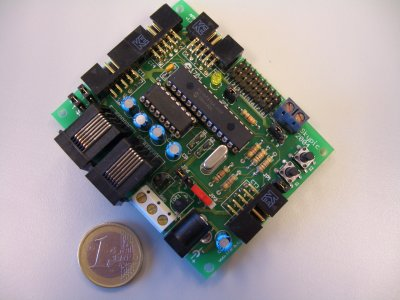

|
Artículo 9: ”Hardware Libre: la Tarjeta Skypic, una Entrenadora para Microcontroladores PIC” |
|
 |
González-Gómez,
J, Andres
Prieto-Moreno Torres. ,”Hardware Libre: la Tarjeta
Skypic, una Entrenadora para Microcontroladores PIC”, I
Congreso de Tecnologías de Software Libre,
CTSL 2005, Factultad de
Informática, A Coruña. Julio 2005.
Las ideas del software libre se están
extendiendo a otros ámbitos. Uno de ellos es el hardware. En
este artículo presentamos una tarjeta libre, para desarrollo
de proyectos con microcontroladores PIC. Es hardware libre, por lo
que cualquiera la puede utilizar, estudiar, fabricar, modificar,
distribuir y redistribuir las modificaciones. Las aplicaciones
principales son la robótica y la docencia, aunque se puede
utilizar en cualquier proyecto donde se requiera un
microcontrolador. Los diseños de hardware libre presentan
muchas ventajas para la sociedad, siendo la mayor de ellas el
aumento del conocimiento tecnológico: están ahí
no sólo para ser usados, sino para que cualquiera pueda
comprender su funcionamiento interno.
|
Transparencias de la presentación: [PDF] [OpenOffice] |
Se condecen permisos para usar, modificar y/o distribuir este artículo, siempre que se mantenga esta nota.
|
Documentos para descargar |
|
skypic.pdf (251KB) |
Artículo en formato PDF |
|
skypic.tgz (289KB) |
Fuentes del artículo para Lyx y dibujos para Xfig |
|
pres-skypic.pdf (749KB) |
Presentación en formato PDF |
|
pres-skypic.sxi (2.5MB) |
Presentación en OpenOffice |
Todas las referencias de este artículo están disponibles aquí
Queremos agradecer a la empresa Ifara Tecnologías la financiación de la primera tirada de PCBs de la Skypic.